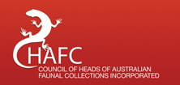

OZCAM, the Online Zoological Collections of Australian Museums, is the collected digitised resources of the State and Territory-based museums and national research collections held by CSIRO.
Museums around Australia and the Atlas of Living Australia are pleased to announce that OZCAM is now running on infrastructure built and provided by the Atlas at http://www.ozcam.org.au/
This upgrade provides major advances in usability and capability and includes more automated processes to ensure a regular flow of data from Museums. Ely Wallis, Manager of Online Collections at Museum Victoria and chair of the Council of Heads of Australian Faunal Collections technical subcommittee said: “We have leveraged Atlas infrastructure and web services to create a new version of OZCAM. The new system uses the best development and visualization tools built by the Atlas team and is a result of an excellent collaboration between Museum and Herbaria partners which has been evolving since the Atlas was first created in 2007”.
This new iteration of OZCAM is directly built upon standard Atlas components and open web services while retaining the look and feel of the previous OZCAM. It also retains the OZCAM focus on faunal specimens held in Australian museums, while linking to the advanced analytical and mapping tools provided through direct links to the Atlas Spatial Portal.
Through OZCAM, researchers and others can discover, explore and visualize information from all contributing museums simultaneously, allowing exploration of the Australian fauna at a national level.
In practical terms the query and mapping functionality, with additional capability to explore data according to a range of data quality attributes will be very useful in taxonomic research and investigation of the country’s distributed faunal collections.
Atlas Director, John La Salle said, “This new OZCAM site is an example of the power the Atlas can bring to existing initiatives. It demonstrates a real opportunity for others who wish to provide biodiversity data discovery and visualisation capability within their own systems.”
“If you have a website about Australia’s richness in plants or animals, you are welcome to embed Atlas maps and species information directly at no cost to you. The Atlas partners are also looking forward to the release of Australia’s Virtual Herbarium (AVH) using the same Atlas infrastructure in the near future.”
More information on the Atlas at http://www.ala.org.au
More information on OZCAM at www.ozcam.org.au